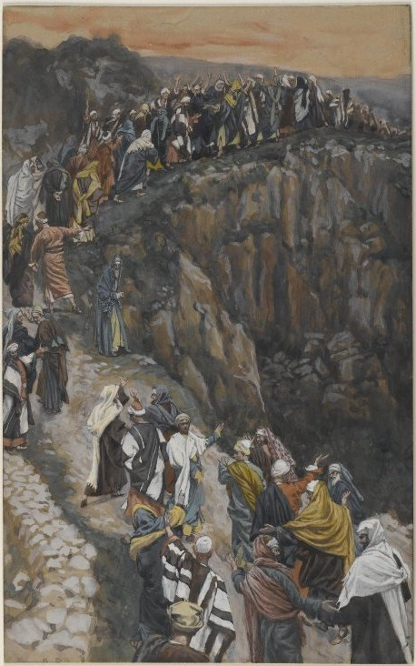

Isaías 61 — La Traducción Mister

Isaías 61. La turba de Nazaret de Tissot, de la escena que sigue a la lectura (Lucas 4:28–30): la congregación que acaba de oír «a proclamar libertad» lo lleva hasta el borde de la colina. No es un cuadro del capítulo, solo de lo que provocó la lectura de sus dos primeros versículos.
_-_James_Tissot.jpg){kind=link}
Notas del traductor — versículo por versículo
⭐ Quién es «mí». El que habla no tiene nombre: «el Espíritu del Señor Jehová está sobre mí» está en un versículo de la Biblia hebrea, este, y se deja al lector decidir si es el profeta, el siervo de los capítulos anteriores o una figura que el capítulo no nombra. La tradición que lo lee en voz alta en Nazaret y dice «hoy se ha cumplido esta escritura delante de ustedes» le dio una respuesta (Lucas 4:18–21, ya en estas páginas), y las notas de ese capítulo exponen lo que cambió la lectura griega. La RV 1909 dice «EL espíritu del Señor Jehová es sobre mí», la RV60 «El Espíritu de Jehová el Señor está sobre mí», la NVI «El Espíritu del Señor y Dios está sobre mí», la TNM 1987 «El espíritu del Señor Soberano Jehová está sobre mí» y la TNM 2019 «El espíritu del Señor Soberano Jehová está sobre mí».
⭐ Ungido, y buenas noticias. «Jehová me ha ungido» está en este único versículo, el verbo mashach que está detrás de mashiach; aquí la unción es para hablar, con el Espíritu, no con aceite. Aquello para lo que es enviado el ungido es levaser, llevar buenas noticias, y «llevar buenas noticias a los humildes» está en este único versículo. La RV 1909 dice «á predicar buenas nuevas á los abatidos», la RV60 «a predicar buenas nuevas a los abatidos», la NVI «anunciar buenas noticias a los pobres», la TNM 1987 «anunciar buenas nuevas a los mansos» y la TNM 2019 «anunciarles buenas noticias a los mansos». El griego de Lucas tiene «los pobres», y el dicho con que Jesús responde a Juan, «a los pobres se les anuncia la buena noticia» (Mateo 11:5, ya en estas páginas), es este verbo.
⭐ Vendar, y libertad. «vendar a los quebrantados de corazón» está en este único versículo, con chavash, vendar una herida. La RV60 dice «a vendar a los quebrantados de corazón», la NVI «a sanar los corazones heridos», la TNM 1987 «para vendar a los quebrantados de corazón» y la TNM 2019 «para vendar a los que tienen el corazón destrozado». Luego «proclamar a los cautivos libertad» está en este único versículo, con deror (diccionario), la palabra del jubileo (Levítico 25:10, ya en estas páginas). La RV60 dice «a publicar libertad a los cautivos» y la NVI «a proclamar libertad a los cautivos».
⚠ «Una apertura». La última línea son dos palabras, peqach-qoach, una apertura, la segunda una forma duplicada de la primera (está en este único versículo), y el hebreo no dice qué se abre. El griego de Lucas tiene «recobro de la vista a los ciegos», la línea del Antiguo Testamento griego, y la misma nota explica por qué el hebreo no puede convertirse en ella.
⭐ Un año, y un día. «Un año de favor» está en este único versículo, shenat ratson, y se pone frente a «un día de venganza», que está en cuatro versículos: este, Isaías 34:8, Isaías 63:4 y Proverbios 6:34, ninguno de los otros todavía en estas páginas. En Isaías 34:8 y 63:4 el día de venganza y un año de ajuste están uno junto al otro, como aquí, y es el par que este versículo hereda. La RV 1909 dice «A promulgar año de la buena voluntad de Jehová», la RV60 «a proclamar el año de la buena voluntad de Jehová», la NVI «a pregonar el año del favor del Señor», la TNM 1987 «para proclamar el año de la buena voluntad de parte de Jehová» y la TNM 2019 «para proclamar el año de la buena voluntad de Jehová».
⭐ Donde Lucas se detuvo. En Nazaret la lectura termina en «el año de favor de Jehová» y deja sin leer el resto del versículo, «y un día de venganza para nuestro Dios» (Lucas 4:19, ya en estas páginas; las notas de allí llevan la discusión). El hebreo no se corta ahí: «proclamar un año de favor para Jehová, y un día de venganza para nuestro Dios» es un solo infinitivo, y «consolar a todos los que están de duelo» es el siguiente en la misma tirada. «Consolar a todos los que están de duelo» está en este único versículo, con nacham, consolar (diccionario), el verbo con que se abre Isaías 40:1 (ya en estas páginas), y es la promesa que recoge la bienaventuranza, «bienaventurados los que lloran» (Mateo 5:4, ya en estas páginas). La RV60 dice «a consolar a todos los enlutados», la NVI «a consolar a todos los que están de duelo» y la TNM 1987 «para consolar a todos los que están de duelo».
⭐ Adorno por ceniza. El hebreo juega con las dos palabras: pe’er, un adorno para la cabeza, una cubierta hermosa, y efer, ceniza, son las mismas tres consonantes en otro orden, y «un adorno para la cabeza en lugar de ceniza» está en este único versículo. La ceniza es lo que los enlutados de Sión se han puesto en la cabeza, y lo que la reemplaza va en el mismo lugar. La RV 1909 dice «para darles gloria en lugar de ceniza», la RV60 «gloria en lugar de ceniza», la NVI «una corona en vez de cenizas», la TNM 1987 «una prenda de adorno para la cabeza en vez de cenizas» y la TNM 2019 «un adorno para la cabeza en vez de cenizas».
⭐ Aceite, y un manto. «El aceite de alegría» está en dos versículos, este y el Salmo 45:8, donde es el aceite sobre un rey en su boda. «Un manto de alabanza» está en este único versículo, puesto frente a ruach kehah, un espíritu abatido. La RV60 dice «óleo de gozo en lugar de luto», la NVI «aceite de alegría en vez de luto», la TNM 1987 «el aceite de alborozo en vez de duelo» y la TNM 2019 «el aceite de alegría en vez de duelo». Para el manto, la RV60 dice «manto de alegría en lugar del espíritu angustiado», la NVI «traje de alabanza en vez de espíritu de desaliento» y la TNM 2019 «el manto de alabanza en vez de un espíritu desanimado».
⭐ Robles de justicia. «Robles de justicia» está en este único versículo, con eilei, una palabra para un árbol fuerte, un roble o terebinto, y las mismas consonantes pueden leerse también como carneros o poderosos. «El plantío de Jehová» está en este único versículo. La RV 1909 dice «árboles de justicia» y la NVI «robles de justicia».
⭐ Las ruinas antiguas. Los que eran enlutados son constructores: «las ruinas de antaño» está en cuatro versículos de la Biblia hebrea, este, Isaías 58:12, Jeremías 25:9 y Jeremías 49:13 (Jeremías 25:9 ya en estas páginas), y en Jeremías 25:9 son las ruinas que Jehová dice que hará. Así que la línea da vuelta una sentencia: las mismas ruinas, ahora levantadas. «Las ciudades arruinadas» está en este único versículo. La RV 1909 dice «edificarán los desiertos antiguos», la RV60 «Reedificarán las ruinas antiguas», la NVI «Reconstruirán las ruinas antiguas», la TNM 1987 «reedificar los lugares que han estado devastados por largo tiempo» y la TNM 2019 «reconstruirán las antiguas ruinas». Las ciudades son «asolamientos de generación en generación», la misma duplicación que en el Salmo 90:1 (ya en estas páginas).
⭐ Extraños como pastores. El versículo 5 da el trabajo a otros: zarim y benei nekhar, extraños y los hijos del extranjero, se pondrán de pie y apacentarán sus rebaños y serán sus labradores y viñadores. La RV60 dice «extranjeros apacentarán vuestras ovejas», la NVI «Gente extraña pastoreará los rebaños de ustedes», la TNM 1987 «extraños realmente estarán allí y pastorearán los rebaños de ustedes» y la TNM 2019 «Extraños vendrán y pastorearán los rebaños de ustedes». El hebreo lo dice sin comentario.
⭐ Una nación de sacerdotes. «Y ustedes», el pronombre es enfático, puesto frente a los extraños: «sacerdotes de Jehová» está en cuatro versículos, dos de ellos sobre los sacerdotes de Nob (1 Samuel 22:17 y 22:21), luego 2 Crónicas 13:9 y este. «Ministros de nuestro Dios» está en este único versículo. La idea de que todo un pueblo es sacerdotal es la del Sinaí, «un reino de sacerdotes» (Éxodo 19:6, ya en estas páginas), y la frase está en ese único versículo; el Nuevo Testamento la toma para la iglesia (1 Pedro 2:9, ya en estas páginas). La RV60 dice «seréis llamados sacerdotes de Jehová», la NVI «a ustedes los llamarán», la TNM 1987 «los sacerdotes de Jehová se les llamará» y la TNM 2019 «a ustedes se les llamará los sacerdotes de Jehová».
⭐ «Se jactarán». «La riqueza de las naciones comerán» está en este único versículo, y el último verbo, titamaru, es una palabra que está en este único versículo: las versiones difieren sobre él. La RV60 dice «con su gloria seréis sublimes», la NVI «se jactarán de los tesoros de ellas», la TNM 1987 «ustedes hablarán con exultación» y la TNM 2019 «hablarán con orgullo de la gloria de ellas».
⭐ Una porción doble. Mishneh es un segundo, un doble; la ley dio al primogénito «dos partes» (Deuteronomio 21:17, ya en estas páginas), en otra expresión, y la imagen es la misma: en lugar de vergüenza, la parte de un primogénito. «Gozo eterno» está en tres versículos: Isaías 35:10, Isaías 51:11 y este, ninguno de los otros todavía en estas páginas. La RV60 dice «En lugar de vuestra doble confusión», la NVI «doble porción», la TNM 1987 «una porción doble» y la TNM 2019 «una porción doble».
⚠ «Robo en el holocausto». La línea es sone gazel be’olah, «odio el robo en el holocausto», y «odio el robo» está en este único versículo. El texto hebreo tiene olah, el holocausto, que es lo que imprimen las versiones antiguas, y la frase dice entonces que Jehová odia una ofrenda hecha de lo robado; muchos lectores toman las consonantes como avlah, maldad, que es lo que imprimen las versiones modernas. La RV60 dice «aborrecedor del latrocinio para holocausto», la NVI «odio el robo y la iniquidad», la TNM 1987 «odio el robo junto con la injusticia» y la TNM 2019 «odio el robo y la injusticia». «Ama el derecho» está en dos versículos, este y el Salmo 37:28 (ya en estas páginas). La RV60 dice «amante del derecho», la NVI «amo la justicia», la TNM 1987 «amo el derecho» y la TNM 2019 «amo la justicia».
⭐ «Un pacto eterno haré». «Un pacto eterno haré» en esta forma está en este único versículo, y su hermana es la promesa del capítulo anterior, «haré con ustedes un pacto eterno» (Isaías 55:3, ya en estas páginas). La RV60 dice «pacto perpetuo», la NVI «un pacto eterno», la TNM 1987 «un pacto de duración indefinida» y la TNM 2019 «un pacto eterno». El versículo 9 da la señal: «la descendencia que Jehová ha bendecido» está en este único versículo. La RV60 dice «linaje bendito de Jehová», la NVI «descendencia bendecida del Señor», la TNM 1987 «la prole que Jehová ha bendecido» y la TNM 2019 «la descendencia que Jehová ha bendecido».
⭐ El que habla responde. La voz pasa a la primera persona: «me gozaré en gran manera» está en este único versículo, el verbo dicho dos veces (sos asis), con «un manto de justicia» en este único versículo. La vestidura es salvación y justicia, puesta junto al adorno del versículo 3. La RV60 dice «me rodeó de manto de justicia», la NVI «me cubrió con el manto de la justicia», la TNM 1987 «con la vestidura sin mangas de la justicia me ha envuelto» y la TNM 2019 «me ha envuelto con la túnica de la justicia».
⭐ Un novio, como sacerdote. «Como un novio que actúa como sacerdote» está en este único versículo, yekhahen, un verbo hecho del sustantivo kohen, sacerdote: el novio se pone el adorno de la cabeza como lo hace un sacerdote. La RV60 dice «como a novio me atavió» y la NVI «un novio que luce su diadema». La novia de la última imagen tiene un eco en la nueva Jerusalén «preparada como una novia ataviada para su esposo» (Apocalipsis 21:2, ya en estas páginas).
⭐ Brotar. El último versículo usa una imagen de labrador, con el verbo tsamach: la forma tatsmiach está en tres versículos, Génesis 3:18, Isaías 45:8 y este; en Génesis la tierra, bajo la maldición, hace brotar espinos (Génesis 3:18, ya en estas páginas), y aquí la tierra y el huerto hacen brotar justicia y alabanza delante de todas las naciones. La RV60 dice «hará brotar justicia y alabanza», la NVI «hará que broten la justicia y la alabanza», la TNM 1987 «hará brotar justicia y alabanza» y la TNM 2019 «hará brotar justicia y alabanza».
Patrones que vale la pena llevar adelante
Dónde esta traducción mantiene las palabras exactas y distintas: «los humildes» para anavim; «ungido» para mashach; «vendar» para chavash; «libertad» para deror; «un año de favor» para shenat ratson; «consolar» para nacham; «un adorno para la cabeza» para pe’er y «ceniza» para efer; «robles de justicia» para eilei hatsedek; «sacerdotes» para kohanim; «un pacto eterno»; «el Señor Jehová» para Adonai Yehovih y «Jehová» para el nombre. El hebreo no tiene pares de escrito y leído en este capítulo.
Ecos pagados. La lectura en Nazaret (Lucas 4:18–21); las buenas noticias a los pobres de Mateo 11:5; la libertad del jubileo de Levítico 25:10; el consuelo de Isaías 40:1; los que lloran de Mateo 5:4; las ruinas antiguas de Jeremías 25:9; el reino de sacerdotes de Éxodo 19:6 y 1 Pedro 2:9; la porción doble de Deuteronomio 21:17; el amante del derecho del Salmo 37:28; el pacto eterno de Isaías 55:3; la novia de Apocalipsis 21:2; y los espinos de Génesis 3:18.
Ecos plantados. Los otros días de venganza (Isaías 34:8, 63:4, Proverbios 6:34); el aceite de alegría (Salmo 45:8); las otras «ruinas de antaño» (Isaías 58:12, Jeremías 49:13); los sacerdotes de Nob (1 Samuel 22:17, 22:21) y 2 Crónicas 13:9; los otros gozos eternos (Isaías 35:10, 51:11); y el otro brotar (Isaías 45:8). Ninguno de estos está todavía en estas páginas.
⚠ Una nota sobre el orden: Isaías está en estas páginas en los capítulos 1, 6, 7, 9, 11, 26, 40, 41, 43, 53, 55 y 61, elegidos por lo mucho que se lee un pasaje y no en orden. El hilo secuencial no cambia: Isaías 2–5, 8, 10–25, 27–39, 42, 44–52, 54, 56–60 y 62–66 siguen pendientes.